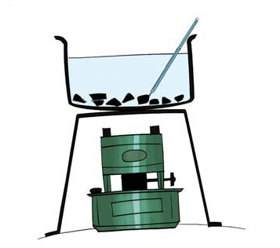
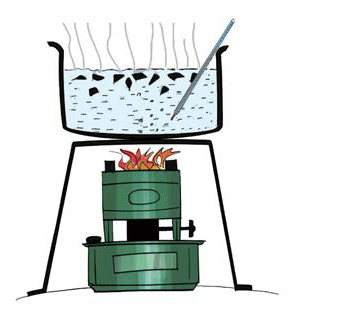
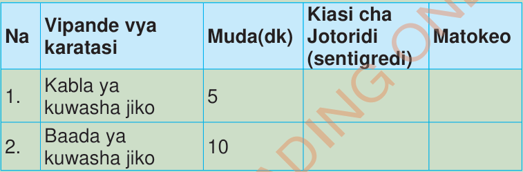

6.
Je, kumetokea nini kwenye vipande vya karatasi na jotoridi katika maji?
7.Andika matokeo kama inavyooneshwa kwenye Jedwali namba 1.
Jedwali namba 1: Jotoridi katika vimiminika
| Na | Vipande vya karatasi | Muda(dk) | Kiasi cha Jotoridi (sentigredi) | Matokeo |
|---|---|---|---|---|
| 1. | Kabla ya kuwasha jiko | 5 | ||
| 2. | Baada ya kuwasha jiko | 10 |

(a)
(b)
Jedwali namba 1: Jotoridi katika vimiminikaKielelezo namba 3: Kusafiri kwa joto katika vimiminika
Matokeo
Maji yalipowekwa katika sufuria yenye vipande vya karatasi na kuachwa kwa dakika tano, vipande vya karatasi vilibakia chini.
Hii inaonesha kuwa maji hayakupanda juu na jotoridi halikubadilika.